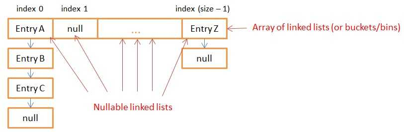
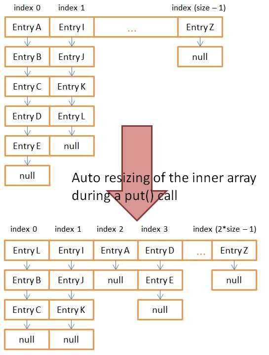

HashMap是存储以及获取数据的一种简单有效的方式，本文探究Java的HashMap的内部实现。
1. 内部存储#
Java的HashMap Class implements Map<K,V> 接口。这个接口的主要方法有：
- put(K key, V value)
- get(Object key)
- remove(Object key)
- Boolean containsKey(Object key)
HashMap在内部用键值对来进行存储，但是还包含两份其他数据，分别为：
- 一个到其他的Entry的reference，这样子HashMap就可以像存单向链表一样来存Entries
- 一个代表key的哈希值的值。将这个值存储来避免每次hashMap需要的时候都要重新计算。
1.1 Java 的Entry的实现#
static class Entry<K,V> implements Map.Entry<K,V> {
final K key;
V value;
Entry<K,V> next;
int hash;
}
一个HashMap存储在多个单向链表中，每个单向链表称为Buckets或者bins. 所有的链表都注册在一个数组中，数组元素为Entry<K,V>. 默认的数组大小是16.

所有有相同哈希值的key值会存在同一个单向链表当中， 当使用者用put或者get方法的时候，程序会计算需要分配搭配哪个链表(数组的位置)，然后会在链表里用equal方法去找entry中有相同key的entry(针对get方法而言)
值得注意的是当调用put方法时，如果找到了同样的key，会将value进行替换。
链表的序号(在数组中的位置)由以下三步来生成：
- 得到key的哈希值
- rehash哈希值，来避免不佳的哈希函数把所有数据都放到了一个单向链表当中
- 用rehash的哈希值和数组的大小做位掩码，
// the "rehash" function in JAVA 7 that takes the hashcode of the key
static int hash(int h) {
h ^= (h >>> 20) ^ (h >>> 12);
return h ^ (h >>> 7) ^ (h >>> 4);
}
// the "rehash" function in JAVA 8 that directly takes the key
static final int hash(Object key) {
int h;
return (key == null) ? 0 : (h = key.hashCode()) ^ (h >>> 16);
}
// the function that returns the index from the rehashed hash
static int indexFor(int h, int length) {
return h & (length-1);
}
1.2 自动重置大小#
在得到在数组中的位置以后，假设要寻找一个key值，我们需要遍历整个单向链表，来找到这个key值。如果array的size固定的话，单个链表的大小可能会非常大，会使整个查找效率变得很低，因此我们需要自动更新整个数组的大小来保证查找效率。
当我们创建一个HashMap的时候，我们可以定义初始数组的大小和加载参数(Load Factor).如果你不自行定义，那默认的数组大小是16，加载参数是0.75.
public HashMap(int initialCapacity, float loadFactor)
当你调用put方法尝试往HashMap里加新的entry的时候，函数会检测是否需要去增加整个数组的大小。HashMap会存储两个数据：
- HashMap的大小：代表了HashMap中的entry的数量
- Threshold = 数组当下的大小 * load factor.
当调用put方法的时候，会先检测现在的数组的大小是否超过了定义的阈值(Threshold)，如果超过，就会将当前数组的大小进行加倍处理。值得注意的是，当数组大小发生变化的时候，哈希值和数组大小减一的位操作的值会发生变化，也就是说原先的entry会按照现在的数组大小进行重新的分配，将现存的所有entry分配到不同的bucket里面。
这样做的目的就是减小每个数组元素- 单向链表的大小，让put, remove, get操作所需要的时间在合理的范围内。

2. 线程安全？#
HashMap不是线程安全的，是因为假设现在到了设的阈值，需要进行HashMap内部数组的resize。这个时候新的entry可能是用原先的哈希函数来做bucket的分配的，这样子就会造成整个数据的不同步。
3. 键值的不可变性#
String和Integer是很好的键值选项，因为他们本身就是不可变的。如果你创建自己的键值类，而且这个键值类是可变的，那么我们也许就会在HashMap中丢失数据。
因为旧哈希值是被存储在Array中的，作为分配到特定bucket的基准，你改变了键值，也就是改变了传入的哈希值，这时候这是全新的一条数据，无法回到原来的bucket，也无法对其进行覆盖了。